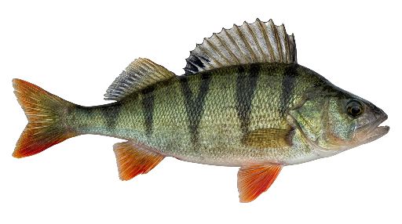

Perch (ahven)
Perca fluviatilis — European perch
Luke — species guide (FI) Luontoportti (FI) FishBase

assets/images/fish/perch.pngFeeding A diurnal, shoaling visual predator: strike efficiency peaks at intermediate light—not deep shade and not harsh glare (Helfman 1981; Diehl 1988). The profile centres the main feeding window around midday and late afternoon (Jamet & Lair 1991; Eriksson 1978).
Temperature Perch tolerate warmth better than most other profiled species: aquaculture work reports growth optima near 23 °C, while coastal wild recruitment is often strongest around 16–22 °C at the surface. Above ~28 °C fish retreat to cooler layers and feeding shuts down.
Reproduction Spring spawning in the shallows: females deposit adhesive egg ribbons on submerged plants or rocks; males follow and fertilise. Eggs are tough, but cannibalism among larvae can be severe in dense populations (culture studies).
WFI highlights A strong link to falling barometric pressure when feeding (percid pattern in Stoner 2004). No lunar term in the model (daylight sight-feeder; no peer-reviewed lunar feeding correlation in the profile notes). Cloud cover: broken sky (~10–50 %) supports visual hunting.